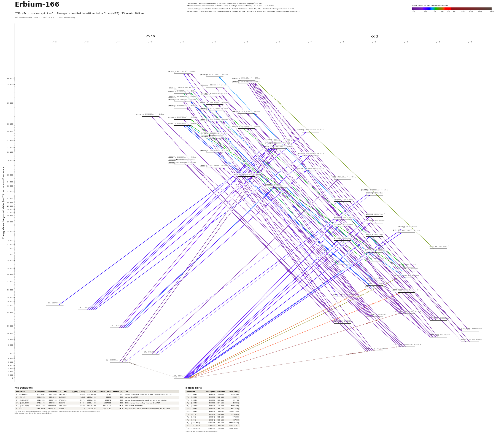

Erbium-166 energy level diagram
Energy levels and transitions of neutral 166Er (Er I, nuclear spin I = 0): the 90 strongest classified lines below 2 µm from the NIST Atomic Spectra Database and the 73 levels they connect, each line with its vacuum wavelength, frequency and, for 87 of them, the reduced dipole matrix element. Level energies come from NIST and refer to the natural isotope mixture; transition rates are 78 measured, 9 NIST, 1 theory. Hyperfine constants and measured frequencies are those of this isotope.
Hover a line or a level to isolate it, click to keep it selected. Scroll to zoom, drag to move.

Download: diagram (PDF) diagram (SVG) transitions (CSV) levels (CSV) source code

Key transitions of 166Er
| Transition | λ vac (nm) | λ air (nm) | ν (THz) | |⟨J‖er‖J′⟩| (ea₀) | A (s⁻¹) | Γ/2π up. (MHz) | branch (%) | Use |
|---|---|---|---|---|---|---|---|---|
| 3H6 – (24943)°7 | 400.9097 | 400.7964 | 747.7805 | 9.445 | 1.870e+08 | 29.75 | 100 | broad cooling line: Zeeman slower, transverse cooling, im… |
| 3H6 – (6,1)°7 | 582.8421 | 582.6805 | 514.3631 | 1.310 | 1.170e+06 | 0.1851 | 100 | narrow-line MOT |
| 3H6 – (13/2,3/2)°7 | 631.0522 | 630.8778 | 475.0676 | 0.579 | 1.800e+05 | 0.02842 | 100 | narrow line proposed for cooling / spin manipulation |
| 3H6 – (15/2,5/2)°7 | 841.2196 | 840.9884 | 356.3784 | 0.469 | 5.000e+04 | 0.007958 | 100 | 8 kHz narrow-line cooling / narrow-line MOT |
| 3H6 – (15/2,3/2)°7 | 1299.2149 | 1298.8596 | 230.7489 | 0.010 | 5.600e+00 | 8.941e-07 | 99.7 | ultranarrow inner-shell |
| 3H6 – 3F4 | 1986.0212 | 1985.4791 | 150.9513 | – | 4.700e-05 | 7.493e-12 | 99.8 | proposed E2 optical clock transition within the 4f12 6s2… |
λ, ν from NIST level energies unless a measured frequency for this isotope is available. A: measured value or NIST. Γ/2π: natural linewidth of the upper level, 1/(2πτ).
Isotope shifts
| Transition | λ vac (nm) | Isotopes | Shift (MHz) |
|---|---|---|---|
| 3H6 – (24943)°7 | 400.910 | 170-166 | -1681(14) |
| 3H6 – (24943)°7 | 400.910 | 168-166 | -840(14) |
| 3H6 – (24943)°7 | 400.910 | 167-166 | -297(6) |
| 3H6 – (24943)°7 | 400.910 | 164-166 | 849(17) |
| 3H6 – (24943)°7 | 400.910 | 170-168 | -866.5(15) |
| 3H6 – (24943)°7 | 400.910 | 166-164 | -859.3(16) |
| 3H6 – (24943)°7 | 400.910 | 164-162 | -1028.7(28) |
| 3H6 – (6,1)°7 | 582.842 | 170-166 | -1966(14) |
| 3H6 – (6,1)°7 | 582.842 | 168-166 | -975(15) |
| 3H6 – (6,1)°7 | 582.842 | 167-166 | -337(11) |
| 3H6 – (15/2,3/2)°7 | 1299.215 | 164-168 | -2732.290(3) |
| 3H6 – (15/2,3/2)°7 | 1299.215 | 166-168 | -1371.710(3) |
| 3H6 – (15/2,3/2)°7 | 1299.215 | 170-168 | 1414.920(5) |
Shift = ν(first isotope) − ν(second isotope).
Closed and nearly closed transitions of 166Er
| Transition | λ vacuum (nm) | Lower level | A (s⁻¹) | Leak per scattered photon | Photons before a leak | Where the leak goes |
|---|---|---|---|---|---|---|
| 3H6 → (13/2,3/2)°7 | 631.0522 | ground | 1.800e+05 measured | closed | – | no other level can be reached by electric-dipole decay |
| 3H6 → (15/2,5/2)°7 | 841.2196 | ground | 5.000e+04 measured | closed | – | no other level can be reached by electric-dipole decay |
| 3H6 → (15/2,3/2)°7 | 1299.2149 | ground | 5.600e+00 measured | closed | – | no other level can be reached by electric-dipole decay |
| 3F3 → (37971)°4 | 390.7305 | metastable | 6.411e+07 measured | 9 % from measured data | 11 | 3H5 4.2 % (long-lived); 3H4 4.1 % (long-lived); 3F4 0.5 % (long-lived); 1 weaker lines |
A transition is closed when its upper level can decay only to the level it was excited from, so the atom keeps scattering photons. “closed”: among the levels NIST lists, no other level below the upper level has the opposite parity and |ΔJ| ≤ 1, so no other electric-dipole decay exists. Otherwise the leak is the sum of the branching ratios of the other decay lines of the upper level (or 1 − branching ratio where that of the line itself has been measured), and the number of photons is 1 / leak. “≥” and “≤”: at least one possible decay path has no listed rate, so the leak is a lower limit. These numbers are derived from the branching ratios, lifetimes and rates of this page, not measured as such; the tag names the weakest of the inputs, * marks theory and ≈ a model calculation. Listed: lines that start on the ground level or on a metastable level and leak at most 10 %, unless more than three possible decay paths have no listed rate. Fine-structure levels only: hyperfine and Zeeman dark states and forbidden decays without a listed rate are not considered. Select a line in the diagram for the full list of its leak channels.
Listed 166Er transitions below 2 µm
Reduced dipole matrix elements follow the convention A = ω³|d|²/(3πε₀ħc³(2J′+1)), with J′ the upper level. Tags show where a number comes from: measured, NIST compilation, high-accuracy theory, or a model calculation.
166Er energy levels
Er⁺ ionisation limit 49262.00 cm⁻¹ = 6.10771 eV (202.996 nm)
Sources
- A. Frisch, PhD thesis 'Dipolar quantum gases of erbium', Univ. Innsbruck (2014), Table 2.4
- A. Frisch, PhD thesis 'Dipolar quantum gases of erbium', Univ. Innsbruck (2014), Table 2.…
- A. Patscheider, PhD thesis 'Controlling and Understanding of Dipolar Quantum Gases of Erb…
- Ban, Jacka, Hanssen, Reader, McClelland, Opt. Express 13, 3185 (2005)
- Den Hartog et al. 2010 / Lawler et al. 2010, as quoted in A. Frisch, PhD thesis 'Dipolar …
- Den Hartog, Chisholm, Lawler, J. Phys. B 43, 155004 (2010), as quoted in A. Patscheider, …
- Kozlov, Dzuba, Flambaum, "On the prospects of building optical atomic clocks using Er I o…
- Kozlov, Dzuba, Flambaum, "On the prospects of building optical atomic clocks using Er I o…
- NIST ASD
- NIST ASD level energies
- Patscheider, Yang, Natale, Petter, Chomaz, Mark, Hovhannesyan, Lepers, Ferlaino, Phys. Re…
- Yu, Wang, Li, Li, Dai, Astrophys. J. Suppl. Ser. 240, 25 (2019), Table 2 (pp. 3-4), colum…
- Yu, Wang, Li, Li, Dai, Astrophys. J. Suppl. Ser. 240, 25 (2019), Table 4 (machine-readabl…
Isotope shifts are nu(first)-nu(second), keys as printed in the sources (reference isotope 166 for 401/583 nm, 168 for 1299 nm). Hyperfine A, B convention: E = A K/2 + B [3K(K+1)/4 - I(I+1)J(J+1)] / [2I(2I-1)J(2J-1)], K = F(F+1)-I(I+1)-J(J+1); 167Er (I=7/2) has negative A (inverted structure). Extra fields beyond SCHEMA.md: top-level ionization_limit; level fields lifetime_other, hyperfine_other, level_energy_measured; transition fields linewidth_MHz / linewidth_kHz / linewidth_Hz, wavenumber_cm, leak_to_metastable, isotope_shift_other, g_factor_difference, alternatives (each alternative names its quantity). rme_J_ea0 values are all derived from the A coefficient in the same entry (schema convention, J' = upper level) and inherit its method. A_s for the narrow lines is 1/tau of the upper level (no E1 leak channel exists below them, Ban et al. 2005). g_J without a literature source is copied from the NIST levels file. The 401 nm lifetime entry is the linewidth-derived value; the direct lifetime measurement (Den Hartog 2010) could only be read second-hand. Second pass: added the proposed 3H6 - 3F4 E2 clock transition (theory only) and use annotations from arXiv:2406.16146 and arXiv:2405.01499; no new measured numbers could be sourced. Third pass: added 103 measured lifetimes of high-lying Er I levels (31926-44526 cm^-1) and 356 branching fractions / transition probabilities of their decay lines from Yu et al., Astrophys. J. Suppl. Ser. 240, 25 (2019) (open access); A_s there is
Atoms with measured data
- Lithium-632 levels, 85 lines
- Lithium-732 levels, 85 lines
- Beryllium-917 levels, 26 lines
- Sodium-2336 levels, 106 lines
- Magnesium-2418 levels, 61 lines
- Magnesium-2518 levels, 61 lines
- Potassium-3934 levels, 84 lines
- Potassium-4034 levels, 84 lines
- Potassium-4134 levels, 84 lines
- Calcium-4035 levels, 61 lines
- Calcium-4335 levels, 61 lines
- Chromium-5256 levels, 87 lines
- Chromium-5356 levels, 87 lines
- Rubidium-8536 levels, 94 lines
- Rubidium-8736 levels, 94 lines
- Strontium-8440 levels, 70 lines
- Strontium-8640 levels, 70 lines
- Strontium-8740 levels, 70 lines
- Strontium-8840 levels, 70 lines
- Cadmium-11115 levels, 21 lines
- Cadmium-11315 levels, 21 lines
- Cadmium-11415 levels, 21 lines
- Caesium-13331 levels, 79 lines
- Barium-13744 levels, 89 lines
- Barium-13844 levels, 89 lines
- Dysprosium-16139 levels, 55 lines
- Dysprosium-16239 levels, 55 lines
- Dysprosium-16339 levels, 55 lines
- Dysprosium-16439 levels, 55 lines
- Erbium-16773 levels, 90 lines
- Erbium-16873 levels, 90 lines
- Thulium-16972 levels, 73 lines
- Ytterbium-17118 levels, 26 lines
- Ytterbium-17318 levels, 26 lines
- Ytterbium-17418 levels, 26 lines
- Mercury-19927 levels, 47 lines
- Mercury-20127 levels, 47 lines
- Mercury-20227 levels, 47 lines